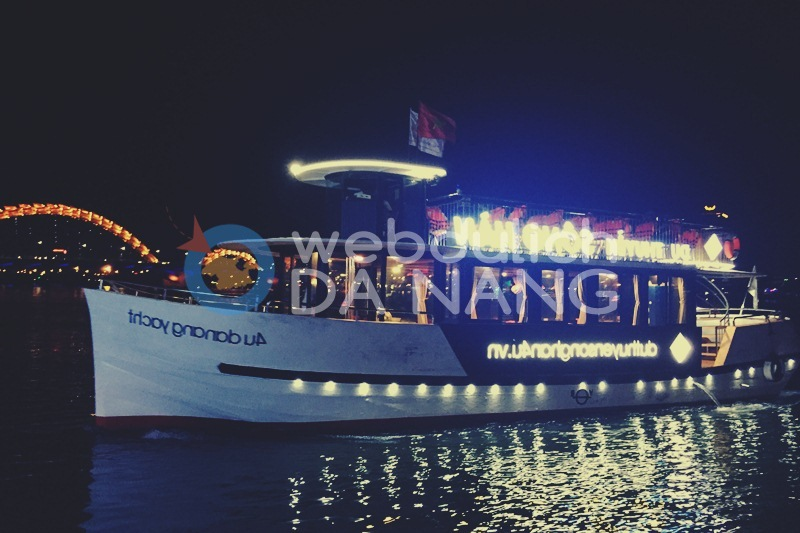
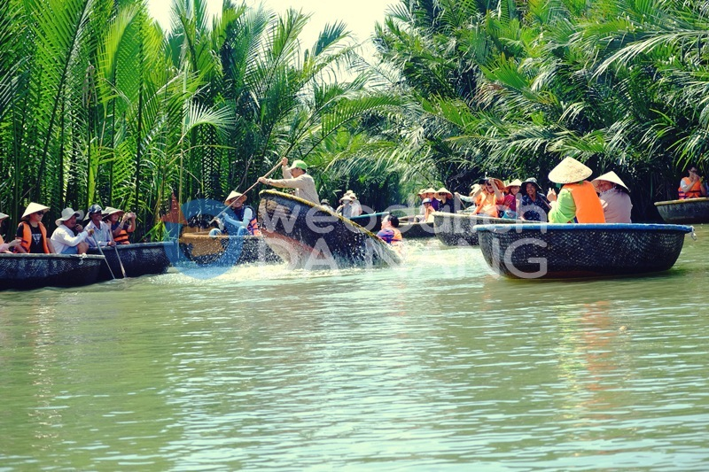
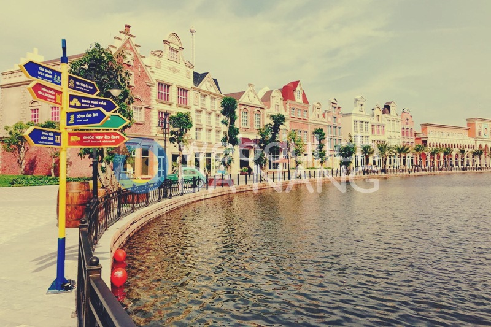

Luôn đưa đến cho bạn những tour du lịch giá rẻ và chất lượng nhất.
1. Tour du thuyền trên sông Hàn.

Du thuyền Sông Hàn – Trải nghiệm cảm giác ngắm toàn cảnh Sông Hàn các cây cầu và toàn cảnh khu vực 2 bên bờ sông về đêm, thưởng thức những bữa ăn thật lãng mạng. Với khoảng thời gian 2 tiếng từ 20h – 22h hàng ngày bạn sẽ có những khoảnh khắc thật vui, thú vị cùng gia đình và bạn bè khi ở đây.
Du thuyền sông Hàn có rất nhiều chuyến được tổ chức hàng ngày trong tuần và khoảng thời gian xuất phát là 18h10 – 19h10 – 20h10 – 21h10. Lưu ý rằng ngày cuối tuần chủ nhật chuyến Du thuyền Sông Hàn sẽ xuất phát đúng 20h bạn nhé.
2. Tour rừng dừa Bảy Mẫu Hội An.

Tour Rừng dừa Bảy Mẫu Hội An – Tour rừng dừa bảy mẫu đưa quý khách khám phá rừng dừa Bảy mẫu Cẩm Thanh Hội An bằng thuyền thúng, tham gia vào các trò chơi vùng sông nước như: đua thuyền thúng, câu cua, bắt ốc, làm vật phẩm bằng lá dứa, tung chài…
3. Tour du lịch Bà Nà Hills.
Khu du lịch Bà Nà Hills nên thơ, xinh đẹp nằm trên ngọn núi Chúa thuộc địa chỉ Hòa Ninh – Hòa Vang – Đà Nẵng nằm cách trung tâm thành phố khoảng 30 km về hướng Tây Nam. Để có thể lên được núi Bà Nà tham quan, các bạn sẽ ngồi cáp treo ngắm nhìn thành phố biển.
Cầu Vàng giữa không trung gồm 8 nhịp, 7 trụ và 2 mố với tổng chiều dài 150m. Bề rộng toàn bộ cầu là 5m, trong đó phần mặt cầu dành cho người đi lại rộng 3m, hai bồn hoa mỗi bên rộng 1m. Điểm nhấn ấn tượng nhất của cây cầu chính là đôi bàn tay của thần núi nâng dải lụa Cầu Vàng. Những vết loang lổ rêu phong, bề mặt gồ ghề thô ráp hết sức tự nhiên của đá núi, đôi bàn tay ấy khiến cả các kiến trúc sư gạo cội trong ngành cũng phải kinh ngạc khi biết nó không được tạc ra từ đá núi, mà được tạo nên bởi thép hình ống và lưới thép đắp vữa theming.
4. Tour Vinpearl Land Nam Hội An.

Vinpearl Land Nam Hội An là khu vui chơi giải trí, trải nghiệm văn hóa và thiên nhiên hoang dã lớn nhất, mới nhất và hấp dẫn Việt Nam, mang tới những sản phẩm, mô hình và công nghệ vui chơi giải trí hàng đầu thế giới. Trải nghiệm nhiều trò chơi cảm giác mạnh độc – lạ – hiếm có trên thế giới như cú rơi thế kỷ từ độ cao kỷ lục 85m, phi thuyền gió lốc Tourbillon,…95 trò chơi trong nhà, hay sân khấu nhạc nước hiện đại với 2500 chỗ ngồi.
Ven theo sông bên bờ Tây của Bến cảng Giao Thoa, du khách sẽ được chiêm ngưỡng Đại lộ Giấc Mơ khắc họa tổ hợp kiến trúc phương Tây hiện đại. Hay đến với River Safari – khu vườn thú mở du khảo bằng đường thủy duy nhất tại Việt Nam với khoảng 39 loài thú quý hiếm: hổ Belgan, sư tử trắng, tê giác,… Nơi đây chắc chắn là một điểm đến không thể bỏ lỡ trong hành trình du lịch miền Trung của bất cứ du khách nào tới Đà Nẵng, Hội An.